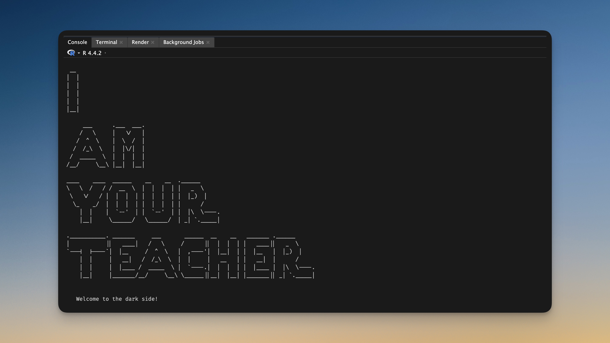
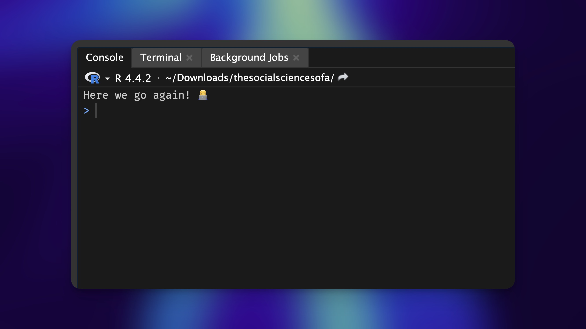
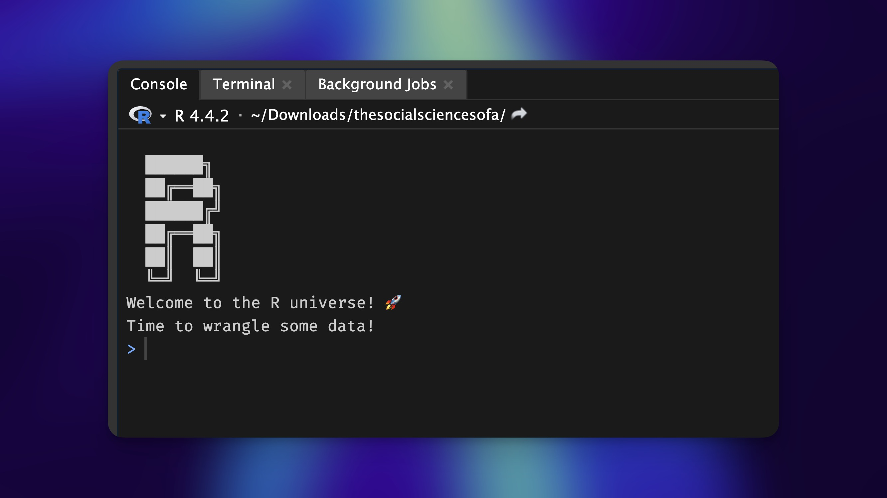
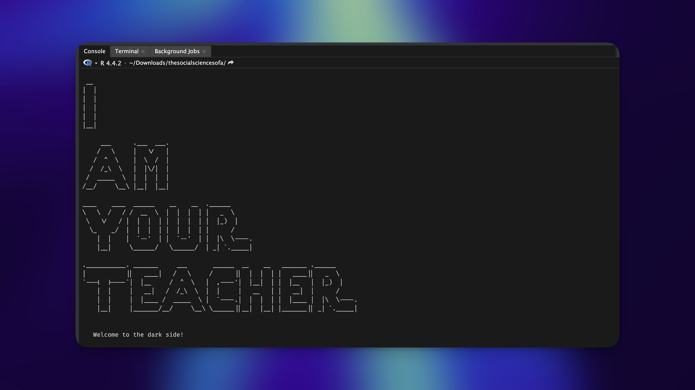
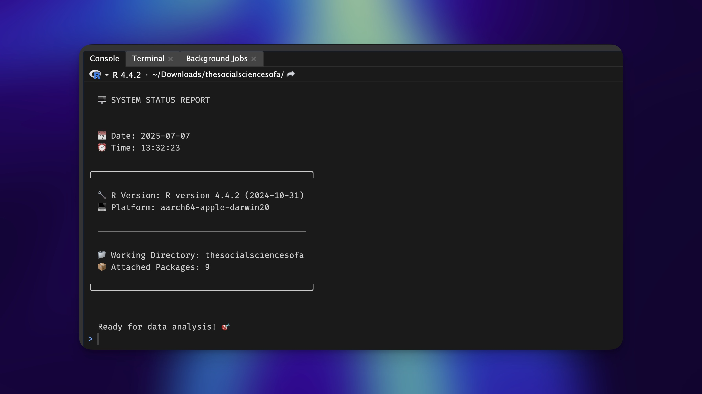
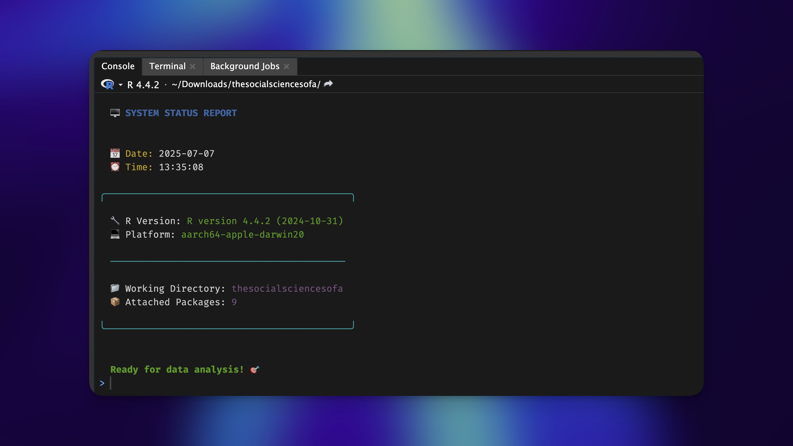
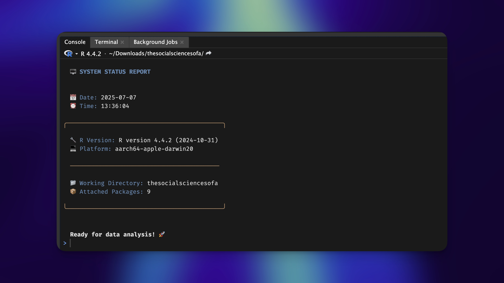
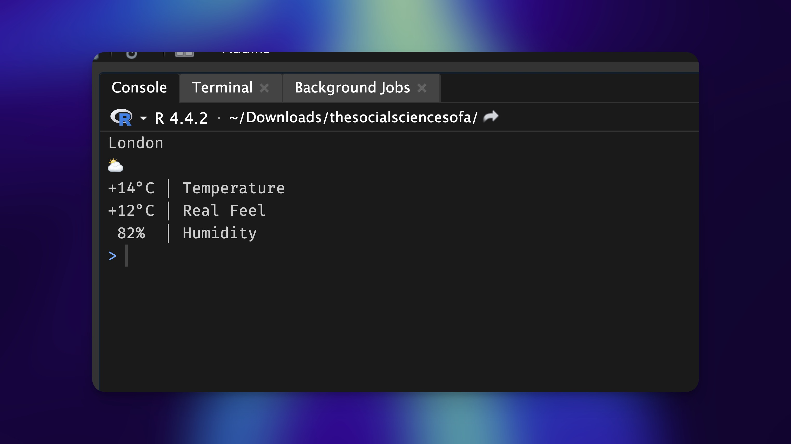
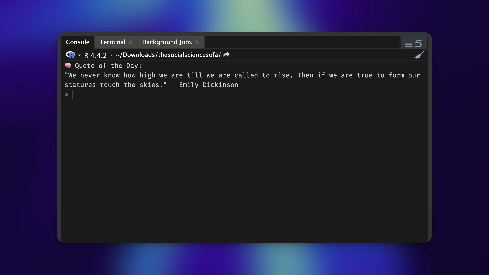

search()[1] ".GlobalEnv" "package:stats" "package:graphics"
[4] "package:grDevices" "package:utils" "package:datasets"
[7] "package:methods" "Autoloads" "package:base" .Rprofile customisation. Learn how to add ASCII art, motivational quotes, colourful dashboards, and live weather updates — all without slowing down your workflow. This guide is fun, practical, and packed with code to personalise your R experience to your hearts content.
Daniel Dauber
July 14, 2025

Picture this: It is 9 am on a Monday morning. You are clutching your third cup of coffee, staring at your screen with the grim determination of someone about to wrangle a particularly unruly dataset. You double-click RStudio, and… yawn… the same old splash screen appears. Again. For the 1,247th time this year.
What if I told you that startup moment could be transformed from mundane to magical? What if, instead of that generic loading screen, you could be greeted by ASCII art masterpieces, live weather updates, or daily doses of inspiration? What if your R session could start with the digital equivalent of a warm hug and a gentle “you’ve got this” whisper?
Today, we are diving deep into the wonderful world of .Rprofile customisation – a journey that will not make you a better analyst (sorry!), but will absolutely make your daily R experience more delightful. And let us be honest, in a world where we spend half our lives debugging code or trying to understand why our regressions do not approve of our hypotheses, we need all the delight we can get.
Before we embark on this grand adventure, let us get you up and running with something simple and quick. Here is how to get started in less than two minutes:
The .Rprofile file is like your home’s welcome mat, but for R. It lives in your home directory and is invisible by default (hence the mysterious dot).
In RStudio, run this command to open your .Rprofile:
Copy and paste this magical incantation into your .Rprofile:
Save the file, restart RStudio, and watch the magic happen. You have just taken your first step into a larger world of customisation possibilities. If all you want is a custom message, this does the trick. If you want something more intriguing and exciting, then read on.
The Technical Bit: Everything that follows in this post should go between those curly braces where you see the messages. The setHook("rstudio.sessionInit", ...) {...} wrapper is the key that makes everything work in RStudio. It is like telling RStudio “hey, run this code every time you start up.” I will show you the inner code for clarity, but remember to wrap it in the setHook() structure. In short: You always start from this template:
.Rprofile documentThink of .Rprofile as your personal R butler – the kind that remembers exactly how you like your workspace arranged and greets you with a knowing nod every morning. This file contains R code that runs automatically when R starts, allowing you to set up your digital domain exactly how you like it.
But here is where it gets interesting: regular .Rprofile tricks work fine in base R, but RStudio is a different beast entirely. The setHook() function is your secret weapon for RStudio customisation. It is like having a backstage pass to RStudio’s startup sequence.
The beauty of this approach is that it is completely non-destructive. If you mess something up, just delete the problematic code and restart. No harm, no foul, no need to reinstall anything.
Let us look at some customisation options that might fit your bill.
Let us begin with the zen of startup customisation. Sometimes, the most powerful thing you can do is…nothing. Well, almost nothing.
This single line clears your console, giving you a pristine workspace to begin your analytical adventures. It might seem trivial – after all, it is just one keystroke saved. However, there is something deeply satisfying about starting with a clean slate.
I assume that this saves me approximately 0.5 seconds per RStudio session. Assuming I only restart an R Session once each day (very unlikely), over a year, that is roughly 3 minutes of my life back. Will this 3 minutes change the world? Probably not. Will it give me a tiny hit of dopamine every morning? Absolutely.
But more importantly, it is a statement. It says, “I care about my digital environment enough to make it exactly how I want it.” And that, my friend, is the first step toward true customisation mastery.
Now that you have mastered the zen of console clearing, let us add some personality to your startup routine. Custom messages are where the real fun begins – it is like having a conversation with your computer, except your computer actually says something encouraging for once. The below code is what I use for several years now. A bit boring for some, but plenty for me.

The message() function is perfect for this because it is specifically designed for informational output. Unlike print() or cat(), it has a certain gravitas – it is the difference between whispering and speaking with conviction.
But why stop at generic encouragement? This is your chance to inject some personality into your R sessions. Maybe you are the type who needs a gentle reminder that correlation does not imply causation. Perhaps you are working on a specific project and need daily motivation to finish that analysis. Or maybe you just want to remind yourself that you are awesome at what you do.
The key is making it personal. After all, you are the only one who will see this message (and maybe your students/colleagues), so make it count.
Here is where we throw caution to the wind and embrace our inner artist. ASCII art might seem frivolous, but there is something wonderfully subversive about turning your serious data analysis environment into a canvas for creative expression.
Let us start with something appropriately R-themed:

The cat() function is your ASCII art best friend because it prints text exactly as you have formatted it. No automatic line breaks, no unwanted spacing – just pure, unadulterated artistic expression.
But why stop at simple logos when you can create entire startup experiences? For those brave enough to venture into the realm of epic ASCII art, here is something that will make your colleagues either deeply impressed or deeply concerned about your priorities.
cat("\014")
# ASCII art Star Wars inspired message
message_art <- "
__
| |
| |
| |
| |
|__|
___ .___ ___.
/ \\ | \\/ |
/ ^ \\ | \\ / |
/ /_\\ \\ | |\\/| |
/ _____ \\ | | | |
/__/ \\__\\ |__| |__|
____ ____ ______ __ __ .______
\\ \\ / / / __ \\ | | | | | _ \\
\\ \\/ / | | | | | | | | | |_) |
\\_ _/ | | | | | | | | | /
| | | `--' | | `--' | | |\\ \\----.
|__| \\______/ \\______/ | _| `._____|
.___________. _______ ___ ______ __ __ _______ .______
| || ____| / \\ / || | | | | ____|| _ \\
`---| |----`| |__ / ^ \\ | ,----'| |__| | | |__ | |_) |
| | | __| / /_\\ \\ | | | __ | | __| | /
| | | |____ / _____ \\ | `----.| | | | | |____ | |\\ \\----.
|__| |_______/__/ \\__\\ \\______||__| |__| |_______|| _| `._____|
"
cat(message_art)
message("\n\n Welcome to the dark side! \n\n")
I created this using ASCII Art Generator, which is an absolutely fantastic rabbit hole to fall down when you should be working.
Let us shift gears from artistic to informational. What if your startup screen could give you a quick overview of your current R environment? Think of it as your personal mission control – a heads-up display for your analytical adventures.
cat("\014")
# System information
message("")
message(" 🖥️ SYSTEM STATUS REPORT")
message("")
message("")
message(" 📅 Date: ", Sys.Date())
message(" ⏰ Time: ", format(Sys.time(), "%H:%M:%S"))
message("")
message("╭────────────────────────────────────────────╮")
message("")
message(" 🔧 R Version: ", R.version.string)
message(" 💻 Platform: ", R.version$platform)
message("")
message(" ──────────────────────────────────────────")
message("")
message(" 📁 Working Directory: ", basename(getwd()))
message(" 📦 Attached Packages: ", sum(grepl("^package:", search())))
message("")
message("╰────────────────────────────────────────────╯")
message("")
message("")
message(" Ready for data analysis! 🎯")
This creates a neat little status report that tells you everything you need to know about your current R environment. The R.version.string gives you your R version, R.version$platform tells you what system you are running on, and basename(getwd()) shows just the name of your current working directory without the full path (because nobody needs to see /Users/YourName/Documents/Projects/That_Analysis_You_Started_Six_Months_Ago_But_Never_Finished).
The sum(grepl("^package:", search())) is a neat little trick to count attached packages. The search() function lists all kinds of objects, including loaded packages. Therefore, we have to make sure we only count objects that relate to loaded packages. The grepl() function is an important one to remember if you work with character vectors frequently. It allows us to look for patterns in text, in our case this is package:. Learning how to use grepl() is certainly an essential skill everyone should tackle at some point in their R journey.
Here is an example of the unfiltered search() output:
Our status report is functional, but let us be honest, it is about as exciting as watching paint dry in grayscale. Time to add some color to our console world using the magnificent crayon package.
cat("\014")
# Check for required packages
required <- c("crayon")
for (pkg in required) {
if (!requireNamespace(pkg, quietly = TRUE)) {
message("❗ Package '", pkg, "' is not installed. Please install it with install.packages(\"", pkg, "\")")
}
}
# Load colors
if (requireNamespace("crayon", quietly = TRUE)) {
bold <- crayon::bold
blue <- crayon::blue
green <- crayon::green
magenta <- crayon::magenta
cyan <- crayon::cyan
yellow <- crayon::yellow
} else {
bold <- blue <- green <- magenta <- cyan <- yellow <- identity
}
message("")
message(bold(blue(" 🖥️ SYSTEM STATUS REPORT")))
message("")
message("")
message(yellow(" 📅 Date: "), Sys.Date())
message(yellow(" ⏰ Time: "), format(Sys.time(), "%H:%M:%S"))
message("")
message(cyan("╭────────────────────────────────────────────╮"))
message("")
message(" 🔧 R Version: ", green(R.version.string))
message(" 💻 Platform: ", green(R.version$platform))
message("")
message(cyan(" ──────────────────────────────────────────"))
message("")
message(" 📁 Working Directory: ", magenta(basename(getwd())))
message(" 📦 Attached Packages: ", magenta(sum(grepl("^package:", search()))))
message("")
message(cyan("╰────────────────────────────────────────────╯"))
message("")
message("")
message(bold(green(" Ready for data analysis! 🎯")))
Notice how we are being responsible developers here? We check for package availability using requireNamespace() with quietly = TRUE to avoid annoying error messages. The identity function is our safety net. It is like having a backup plan that just returns whatever you give it, effectively removing color formatting when crayon is not available.
This is the kind of defensive programming that separates the experienced programmers from novices. Your .Rprofile should enhance your experience, not break it when a package goes missing.
For those who want complete control over their aesthetic destiny, let us create custom color schemes using RGB values. This is where you can really make your startup screen uniquely yours.
cat("\014")
# Check for required packages
required <- c("crayon")
for (pkg in required) {
if (!requireNamespace(pkg, quietly = TRUE)) {
message("❗ Package '", pkg, "' is not installed. Please install it with install.packages(\"", pkg, "\")")
}
}
if (requireNamespace("crayon", quietly = TRUE)) {
# Create custom RGB styles (values between 0–255)
title_col <- crayon::make_style(rgb(55, 114, 156, maxColorValue = 255))
label_col <- crayon::make_style(rgb(55, 114, 156, maxColorValue = 255))
value_col <- crayon::make_style(rgb(233, 228, 222, maxColorValue = 255))
section_col <- crayon::make_style(rgb(165, 93, 53, maxColorValue = 255))
bold <- crayon::bold
} else {
# Fallback to identity if crayon is unavailable
title_col <- label_col <- value_col <- section_col <- bold <- identity
}
message("")
message(bold(title_col(" 🖥️ SYSTEM STATUS REPORT")))
message("")
message("")
message(label_col(" 📅 Date: "), value_col(Sys.Date()))
message(label_col(" ⏰ Time: "), value_col(format(Sys.time(), "%H:%M:%S")))
message("")
message(section_col("╭────────────────────────────────────────────╮"))
message("")
message(label_col(" 🔧 R Version: "), value_col(R.version.string))
message(label_col(" 💻 Platform: "), value_col(R.version$platform))
message("")
message(section_col(" ──────────────────────────────────────────"))
message("")
message(label_col(" 📁 Working Directory: "), value_col(basename(getwd())))
message(label_col(" 📦 Attached Packages: "), value_col(sum(grepl("^package:", search()))))
message("")
message(section_col("╰────────────────────────────────────────────╯"))
message("")
message("")
message(bold(value_col(" Ready for data analysis! 🚀")))
This approach gives you complete control over your color scheme. You can match your favorite color palette, align with your company’s branding, or just create something that makes you smile every morning. The make_style() function accepts RGB values, so you can be as precise as you want with your color choices.
Pro tip: Use an online color picker to find the perfect RGB values for your palette. There is something deeply satisfying about having a perfectly curated color scheme that is uniquely yours. Pinterest is usually where I get my colour palette inspirations from.
So far, we have been working with static, local information. But what if we could break free from the confines of our computer and connect with the wider world? What if your startup screen could tell you whether you will need an umbrella for your lunch break or not?
Welcome to the world of dynamic content. Here is how to turn your R startup into a personal weather station:
cat("\014")
# Attempt to fetch and display weather information
tryCatch({
# Check for required packages
required <- c("httr")
for (pkg in required) {
if (!requireNamespace(pkg, quietly = TRUE)) {
message("❗ Package '", pkg, "' is not installed. Please install it with install.packages(\"", pkg, "\")")
}
}
# Fetch weather data from wttr.in API
# This format provides a compact weather summary
response <- httr::GET(
'https://wttr.in/London?format=%l%0A%c%0A%t%20|%20Temperature%0A%f%20|%20Real%20Feel%0A%20%h%20%20|%20Humidity%0A',
httr::timeout(10))
# Check if the API request was successful
if (httr::status_code(response) == 200) {
# Display the weather information
cat(httr::content(response, "text"))
} else {
# Log any HTTP errors
message("Weather service returned code: ", httr::status_code(response))
}
}, error = function(e) {
# Handle any errors gracefully without breaking RStudio startup
message("Weather fetch error: ", e$message)
})
This code uses the fantastic wttr.in service, which provides weather data with a delightfully simple API. The service will automatically detect your location based on your IP address, or you can specify a city by changing “London” to your preferred location.
The GET() function from the httr packages makes the HTTP request, and we set a timeout to prevent your startup from hanging if the weather service is having a bad day. The tryCatch() wrapper is our safety net as it ensures that if something goes wrong with the weather fetch, your RStudio startup will not crash and burn.
Notice how we are building in resilience here. The internet is a fickle beast, and APIs can fail. Good startup customisation code should degrade gracefully when things go wrong.
Weather is practical, but what about feeding your soul? Let us add some daily inspiration to your startup routine, because sometimes, the difference between a good day and a great day is a perfectly timed dose of wisdom.
# Ensure required packages are available
required <- c("httr", "jsonlite", "glue")
for (pkg in required) {
if (!requireNamespace(pkg, quietly = TRUE)) {
message("❗ Package '", pkg, "' is not installed. Please install it with install.packages(\"", pkg, "\")")
}
}
# Fetch and display quote of the day
tryCatch({
res <- httr::GET("https://zenquotes.io/api/random", httr::timeout(5))
if (httr::status_code(res) == 200) {
raw_txt <- httr::content(res, "text", encoding = "UTF-8")
# Parse and extract quote
quote_data <- jsonlite::fromJSON(raw_txt)
quote <- quote_data$q
author <- quote_data$a
cat(glue::glue('\n🧠 Quote of the Day:\n"{quote}" — {author}\n'))
} else {
message("Quote service returned code: ", httr::status_code(res))
}
}, error = function(e) {
message("Quote fetch error: ", e$message)
})
This example introduces some new friends to our toolkit: - jsonlite: For parsing JSON responses with elegance - glue: String interpolation that actually makes sense (unlike paste())
The ZenQuotes API is a gem – it provides inspirational quotes without requiring API keys or complex authentication. The jsonlite::fromJSON() function parses the JSON response, and we extract the quote and author fields.
Notice how we are building in backup wisdom for when the API fails? Having a plan B for when technology lets you down is never a bad idea.
Before you go completely overboard with dynamic content (and trust me, the temptation is real), let us talk about the trade-offs. Every paradise has its serpents, and startup customisation is no exception.
The Network Dependency Dilemma: All those beautiful dynamic features only work when you are connected to the internet. Work from a coffee shop with spotty WiFi? You might stare at error messages instead of inspiring quotes. The solution? Always include fallback content for offline scenarios.
The Speed Trap: Fetching external data adds latency to your startup. While we are talking seconds, not minutes, some users prefer their R sessions to start faster than you can say “statistical significance”. Consider your personal patience levels when adding network-dependent features.
The API Reliability Roulette: Third-party services can go down, change their APIs, or start requiring authentication. Always wrap your API calls in error handling, and do not let a broken quote service break your entire R startup experience.
The Rate Limit Reality: Some APIs have rate limits. If you are the type who starts R sessions every five minutes while debugging, you might hit these limits. Choose your APIs wisely, and do not abuse the free tiers.
The examples we have explored are just the tip of the iceberg. Your .Rprofile is a canvas limited only by your imagination and your tolerance for startup complexity. Here are some ideas to fuel your creativity:
The Project Detective: Write code that examines your current working directory and provides project-specific information. Working on a machine learning project? Get a reminder of your model’s latest performance. Analyzing survey data? See a quick summary of your response rates.
The Package Sentinel: Create a system that checks for outdated packages and gently reminds you to update them. No more surprises when that function you have been using for months suddenly breaks because of a breaking change in a dependency.
The Git Whisperer: If you are working with version control, display the current branch and repository status. Are you on main when you should be on develop? Your startup screen can save you from committing to the wrong branch.
The Calendar Oracle: Connect to your calendar API and display upcoming meetings or deadlines. Nothing says “professional data scientist” like having your startup screen remind you about that 2 pm stakeholder meeting.
The Motivation Engine: Create a rotating set of personal motivational messages tailored to your current challenges. Working on a particularly difficult analysis? Let your startup screen be your cheerleader.
You might also explore the cowsay package for ASCII animals that can deliver your messages (because everything is better when a cow says it), or investigate APIs that require authentication for more personalised data.
From our journey through the world of RStudio customisation, you should now possess:
The Foundation: Understanding how .Rprofile and setHook() work together to create startup magic
The Art of Progression: Building from simple console clearing to complex, dynamic content displays
The Defensive Mindset: Using tryCatch() and requireNamespace() to create robust code that enhances rather than breaks your workflow
The Dependency Dance: Managing package requirements and providing graceful fallbacks
The Network Navigator: Integrating external APIs while handling the unpredictable nature of the internet
The String Sculptor: Using glue for readable formatting and crayon for colorful output
The Balance Master: Understanding the trade-offs between functionality and simplicity, online features and offline reliability
Customising your .Rprofile will not make you a better data scientist. It will not improve your statistical modeling skills or make your visualisations more insightful. What it will do is make your daily R experience more personal, more delightful, and more uniquely yours.
In a world where we spend countless hours staring at screens, fighting with data, and debugging code, these small moments of joy matter. They are the difference between viewing your tools as cold, impersonal utilities and seeing them as extensions of your personality and creativity.
The key is finding the right balance for your workflow. Some days you will want the full ASCII art, weather report, and inspirational quote experience. On other days, you will appreciate the simple elegance of a cleared console and a friendly greeting.
Your .Rprofile is yours to customise. Make it reflect who you are, what you care about, and what makes you smile. In the end, we are not just researchers, analysts and students, we are humans who happen to love working with data. And sometimes, a little personality in our tools can make all the difference.
R Packages Used:
APIs and Services for Dynamic Content:
Essential R Resources:
Happy customising, and may your R sessions be forever more delightful! 🎯✨